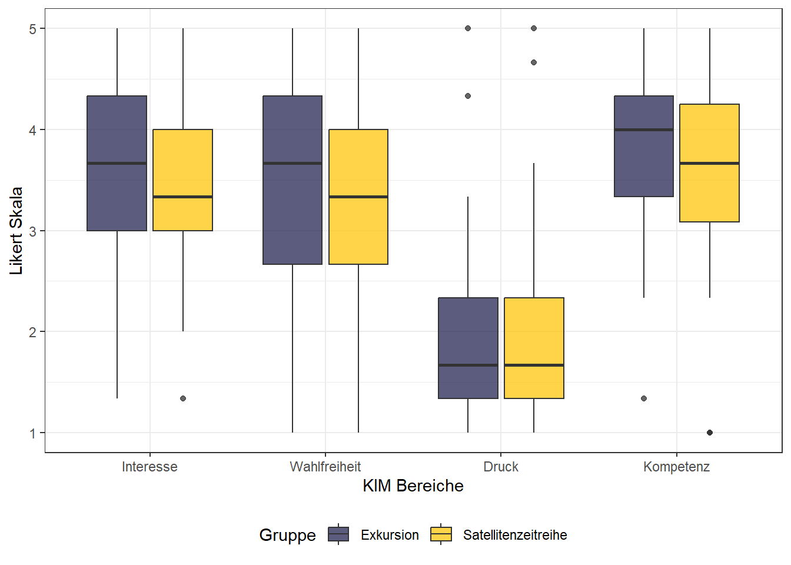

library(reshape)
library(ggplot2)
library(psych) KIM-Analyse
Vorbereitung
Packages importieren
Vorsicht: Die Funktion alpha gibt es sowohl im Paket psych als auch im Paket ggplot2. Hier kann es leicht zu Konflikten kommen. Ein klarer Verweis zur alpha-Funktion in psych findet sich im entsprechenden Code-Block weiter unten.
Arbeitsbereich vorbereiten
Dir setzen, filename korrekt schreiben und working directory definieren.
file = 'Blersch_KIM_Analyse_pub.csv'
print(paste0('Dateipfad: ', file))[1] "Dateipfad: Blersch_KIM_Analyse_pub.csv"Daten importieren und vorbereiten
Encoding der zu importierenden CSV-Tabelle beachten: Für deutsche Umlaute bieten sich die Encodings UTF-8, latin1 oder ISO-8859-1 an.
df <- read.csv(file, sep = ';', header = TRUE, fileEncoding = "ISO-8859-1")
#head(df)| id | sus | ue.name | date | X1 | X2 | X3 | X4 | X5 | X6 | X7 | X8 | X9 | X10 | X11 | X12 | X13 | X14 | X15 | X16 | X17 | X18 | X19 | X20 | X22 | X23 | X24 | X25 | X26 | X28 | X29 | X30 | X31 | X32 | X33 | X34 | X |
|---|---|---|---|---|---|---|---|---|---|---|---|---|---|---|---|---|---|---|---|---|---|---|---|---|---|---|---|---|---|---|---|---|---|---|---|---|
| 1 | be1 | exk | 20.09.2022 | 4 | 3 | 5 | 1 | 4 | 4 | 4 | 4 | 0 | 1 | 4 | 4 | 4 | 1 | 3 | 1 | 5 | 5 | 5 | 4 | 2 | 4 | 4 | 2.00 | wöchentlich | seltener | im Schulbuch. am Computer | 18 | m | 5 | ja | NA | |
| 2 | be2 | exk | 20.09.2022 | 3 | 3 | 5 | 1 | 3 | 3 | 5 | 5 | 4 | 3 | 4 | 3 | 4 | 1 | 4 | 1 | 4 | 5 | 5 | 5 | 1 | 3 | 3 | Feb 25 | wöchentlich | seltener | im Schulbuch. mit dem Tablet/Smartphone | 18 | m | 5 | ja | NA | |
| 3 | be3 | exk | 20.09.2022 | 3 | 4 | 5 | 2 | 2 | 4 | 3 | 3 | 4 | 4 | 4 | 1 | 1 | 1 | 4 | 1 | 4 | 4 | 4 | 5 | 1 | 2 | 4 | Feb 25 | täglich | seltener | im Schulbuch. am Computer. mit dem Tablet/Smartphone | 17 | m | 5 | ja | NA | |
| 4 | be4 | exk | 20.09.2022 | 4 | 3 | 4 | 1 | 5 | 5 | 4 | 5 | 1 | 4 | 5 | 1 | 5 | 4 | 1 | 1 | 5 | 5 | 5 | 5 | 1 | 4 | 5 | 1.00 | wöchentlich | monatlich | im Schulbuch. am Computer. mit dem Tablet/Smartphone | 18 | k | 5 | ja | NA | |
| 5 | be5 | exk | 20.09.2022 | 4 | 2 | 3 | 1 | 3 | 3 | 4 | 4 | 2 | 2 | 3 | 3 | 3 | 3 | 4 | 1 | 5 | 4 | 4 | 3 | 3 | 4 | 2 | wöchentlich | monatlich | im Schulbuch. am Computer. mit dem Tablet/Smartphone | 17 | m | 5 | ja | NA | ||
| 6 | be6 | exk | 20.09.2022 | 3 | 2 | 5 | 1 | 3 | 4 | 5 | 5 | 4 | 2 | 4 | 2 | 2 | 1 | 3 | 2 | 5 | 5 | 5 | 5 | 1 | 5 | 2 | Jan 25 | wöchentlich | seltener | im Schulbuch. am Computer. mit dem Tablet/Smartphone | 17 | k | 5 | ja | NA |
for (i in 1:nrow(df)) { # Spalte "gruppe" hinzufügen
if(df$ue.name[i] == 'exk'){
df$gruppe[i] = "Exkursion"
} else if(df$ue.name[i] == 'szr') {
df$gruppe[i] = "Satellitenzeitreihe"
} else {
df$gruppe[i] = "Fehler"
}
}
# character Einträge der Spalten in factors umwandeln
df$ue.name = factor(df$ue.name, levels = c("exk", "szr"))
df$gruppe = factor(df$gruppe, levels = c("Exkursion", "Satellitenzeitreihe"))
# Anzahl an SuS pro Gruppe ausgeben
print(paste0('Gruppe A - Exkursion: n = ', nrow(df[df$gruppe == "Exkursion",]))) [1] "Gruppe A - Exkursion: n = 51"print(paste0('Gruppe B - Satellitenzeitreihe: n = ', nrow(df[df$gruppe == "Satellitenzeitreihe",])))[1] "Gruppe B - Satellitenzeitreihe: n = 63"Reliabilität prüfen (Cronbachs alpha)
Für die Reliabilitätsprüfung verwenden wir das Paket psych. Die Labels x1, x2, x3 usw. entsprichen den Spaltennamen der importierten Tabelle.
Gruppe A
typ_exk = df[df$gruppe == "Exkursion",] # SuS von Gruppe B selektieren
#print(head(typ))Mit der Funktion alpha berechnen wir Cronbachs alpha für die entsprechende KIM Dimension, die aus drei Items besteht. Die “Dimension” Zusatz bezieht sich auf Items außerhalb der KIM und bezogen sich auf Fragen, die auf die Bedienbarkeit der App abzielten.
alpha_interesse = psych::alpha(subset(typ_exk, select = c(X1, X5, X13))) # Interesse
alpha_wahlfreiheit = psych::alpha(subset(typ_exk, select = c(X3, X9, X15))) # Wahlfreiheit
alpha_druck = psych::alpha(subset(typ_exk, select = c(X4, X14, X16))) # Druck
alpha_kompetenz = psych::alpha(subset(typ_exk, select = c(X7, X8, X11))) # Kompetenz
alpha_zusatz = psych::alpha(subset(typ_exk, select = c(X2, X6, X10, X12))) # ZusatzWir haben Cronbachs alpha berechnet und in Variablen geschrieben. Jetzt erstellen wir einen Dataframe, um eine bessere Übersicht über die Werte zu erhalten.
reliabilitaets_tabelle_exk = data.frame( # Ergebnistabelle erstellen
Exk_Dimension = c("Interesse", "Wahlfreiheit", "Druck", "Kompetenz", "Zusatz"),
Cronbachs_Alpha = c(
alpha_interesse$total$raw_alpha, # cronbachs alpha von Interesse
alpha_wahlfreiheit$total$raw_alpha,
alpha_druck$total$raw_alpha,
alpha_kompetenz$total$raw_alpha,
alpha_zusatz$total$raw_alpha
))
print(reliabilitaets_tabelle_exk) # Cronbachs alpha Exk_Dimension Cronbachs_Alpha
1 Interesse 0.8628302
2 Wahlfreiheit 0.6721685
3 Druck 0.7050517
4 Kompetenz 0.7576531
5 Zusatz 0.7597961Gruppe B
Hier führen wir das selbe wie bei Gruppe A durch. Mit dem Unterschied, dass wir die Sus selektieren, die an den Satellitenzeitreihen (also Gruppe B) mitgearbeitet haben.
typ_szr = df[df$gruppe == "Satellitenzeitreihe",] # SuS von Gruppe B selektieren
#print(head(typ))
alpha_interesse = psych::alpha(subset(typ_szr, select = c(X1, X5, X13))) # Interesse
alpha_wahlfreiheit = psych::alpha(subset(typ_szr, select = c(X3, X9, X15))) # Wahlfreiheit
alpha_druck = psych::alpha(subset(typ_szr, select = c(X4, X14, X16))) # Druck
alpha_kompetenz = psych::alpha(subset(typ_szr, select = c(X7, X8, X11))) # Kompetenz
alpha_zusatz = psych::alpha(subset(typ_szr, select = c(X2, X6, X10, X12))) # ZusatzErneut eine Tabelle zur besseren Übersicht.
reliabilitaets_tabelle_szr = data.frame( # Ergebnistabelle erstellen
Szr_Dimension = c("Interesse", "Wahlfreiheit", "Druck", "Kompetenz", "Zusatz"),
Cronbachs_Alpha = c(
alpha_interesse$total$raw_alpha, # cronbachs alpha von Interesse
alpha_wahlfreiheit$total$raw_alpha,
alpha_druck$total$raw_alpha,
alpha_kompetenz$total$raw_alpha,
alpha_zusatz$total$raw_alpha
))
print(reliabilitaets_tabelle_szr) # Cronbachs alpha Szr_Dimension Cronbachs_Alpha
1 Interesse 0.7606274
2 Wahlfreiheit 0.8334994
3 Druck 0.7615383
4 Kompetenz 0.8133524
5 Zusatz 0.7471812Skalenwerte bilden
Wenn cronbach alpha akzeptabele ist, dann können Skalenwerte (Mean) der Dimensionen gebildet werden. Skalenwerte von bspw. Interesse mit rowMeans berechnen.
In unserem Fall ist keine eine Um- oder REkodierung notwendig. Der Skalenwert wird pro Schülerin und Schüler berechnet, weshalb die Zugehörigkeit zur Gruppe hier noch keine Rolle spielt.
skalenwert_interesse = rowMeans(df[, c("X1", "X5", "X13")]) # Interesse
skalenwert_wahlfreiheit = rowMeans(df[, c("X3", "X9", "X15")]) # Wahlfreiheit
skalenwert_druck = rowMeans(df[, c("X4", "X14", "X16")]) # Druck
skalenwert_kompetenz = rowMeans(df[, c("X7", "X8", "X11")]) # Kompetenz
skalenwert_zusatz = rowMeans(df[, c("X2", "X6", "X10", "X12")]) # Zusatz
df_kim = data.frame(
susID = df$sus,
ueID = df$gruppe,
ueName = df$ue.name,
date = df$date,
Interesse = skalenwert_interesse,
Wahlfreiheit = skalenwert_wahlfreiheit,
Druck = skalenwert_druck,
Kompetenz = skalenwert_kompetenz,
Zusatz = skalenwert_zusatz
) # merge to a data.frame
print(paste0('n = ', nrow(df_kim))) # print report[1] "n = 114"| susID | ueID | ueName | date | Interesse | Wahlfreiheit | Druck | Kompetenz | Zusatz |
|---|---|---|---|---|---|---|---|---|
| be1 | Exkursion | exk | 20.09.2022 | 4.000000 | 2.666667 | 1.000000 | 4.000000 | 3.00 |
| be2 | Exkursion | exk | 20.09.2022 | 3.333333 | 4.333333 | 1.000000 | 4.666667 | 3.00 |
| be3 | Exkursion | exk | 20.09.2022 | 2.000000 | 4.333333 | 1.333333 | 3.333333 | 3.25 |
| be4 | Exkursion | exk | 20.09.2022 | 4.666667 | 2.000000 | 2.000000 | 4.666667 | 3.25 |
| be5 | Exkursion | exk | 20.09.2022 | 3.333333 | 3.000000 | 1.666667 | 3.666667 | 2.50 |
| be6 | Exkursion | exk | 20.09.2022 | 2.666667 | 4.000000 | 1.333333 | 4.666667 | 2.50 |
Deskriptive Statistik für die KIM
Hier werden Werte der desktiptiven Statistik wie bei Wilde et al. (2009) und Keller et al. (2024) berechnet. Dazu zählen der Mittelwert, der Median, die Standardabweichung (sd), die Quartile und die Differenz der Quartile.
Gruppe A: Exkursion
Daten nach Gruppe selektieren, dann r’s summary-Funktion auf Daten anwenden und in eine csv-Datei exportieren.
df_kim_exk = df_kim[df_kim$ueID == 'Exkursion',]
sumstat_exk = summary(df_kim_exk)
write.csv2(sumstat_exk, file = "blersch_diss_analyse_exk.csv") # exportierenStandardabweichung via der sd-Funktion ausgeben lassen. In diesem Fall habe ich die Werte manuell in die Ergebnistabelle eingefügt.
sd_interesse_exk = sd(df_kim_exk$Interesse, na.rm=TRUE)
print(sd_interesse_exk)# Standardabweichung ausgeben[1] 0.8728174sd_wahfreiheit_exk = sd(df_kim_exk$Wahlfreiheit, na.rm=TRUE)
sd_druck_exk = sd(df_kim_exk$Druck, na.rm=TRUE)
sd_kompetenz_exk = sd(df_kim_exk$Kompetenz, na.rm=TRUE)
sd_zusatz_exk = sd(df_kim_exk$Zusatz, na.rm=TRUE)
print(sd_interesse_exk);print(sd_wahfreiheit_exk);print(sd_druck_exk)[1] 0.8728174[1] 1.027678[1] 0.8441475print(sd_kompetenz_exk) # Ergebnisse ausgeben lassen[1] 0.8164966Gruppe B: Satellitenzeitreihe
Hier führen wir das selbe wie bei Gruppe A durch. Mit dem Unterschied, dass wir die Sus selektieren, die an den Satellitenzeitreihen (also Gruppe B) mitgearbeitet haben.
df_kim_szr = df_kim[df_kim$ueID == 'Satellitenzeitreihe',]
sumstat_szr = summary(df_kim_szr)
write.csv2(sumstat_szr, file = "blersch_diss_analyse_szr.csv") # exportierensd_interesse_szr = sd(df_kim_szr$Interesse, na.rm=TRUE) # Standardabweichung ausgeben
sd_wahfreiheit_szr = sd(df_kim_szr$Wahlfreiheit, na.rm=TRUE)
sd_druck_szr = sd(df_kim_szr$Druck, na.rm=TRUE)
sd_kompetenz_szr = sd(df_kim_szr$Kompetenz, na.rm=TRUE)
sd_zusatz_szr = sd(df_kim_szr$Zusatz, na.rm=TRUE)
# Ergebnisse ausgeben lassen
print(sd_interesse_szr);print(sd_wahfreiheit_szr);print(sd_druck_szr);print(sd_kompetenz_szr) [1] 0.8708377[1] 1.04036[1] 0.9248132[1] 0.9269708Visualisierung
Daten/Tabelle für Boxplot vorbereiten
df_kim_kurz = df_kim[1:8] # bis Kompetenz
data = melt(df_kim_kurz) # Neues 'long format' für gruppiertes BoxplotUsing susID, ueID, ueName, date as id variables# Spalten umbenennen, dass Boxplot-Achsen gut lesbar sind
colnames(data)[2] = "Gruppe"; colnames(data)[5] = "KIM"; colnames(data)[6] = "Likert" Boxplot erstellen
Vorlage aus: https://r-graph-gallery.com/265-grouped-boxplot-with-ggplot2.html
ggplot(data, aes(x=KIM, y=Likert, fill=Gruppe)) +
geom_boxplot(alpha=0.75) + # hier bezieht sich alpha auf die Transparenz der Farbe
ylim(1, 5) +
scale_fill_manual(values=c("#252653","#FFC50B")) + # Farbgebung
theme_bw() +
theme(legend.position="bottom", plot.title = element_text(size=11)) +
xlab("KIM Bereiche") +
ylab("Likert Skala")